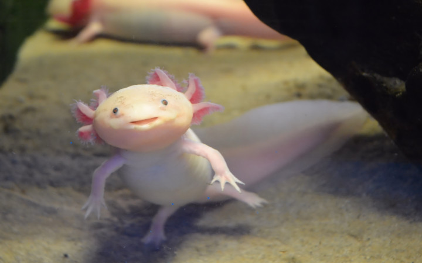

The axolotl, also known as the Mexican walking fish, is a type of salamander native to lakes underlying Mexico City. Unlike most amphibians, axolotls remain in their larval form throughout their entire lives, a phenomenon known as neoteny. They have distinctive feathery external gills, a wide head, and a curious smile-like expression. Axolotls are primarily aquatic and can regenerate lost limbs, making them a subject of intense scientific research.
Axolotls possess a remarkable ability to regenerate not only their limbs but also other body parts, such as their spinal cord, heart, and even parts of their brain. This regeneration process is not only fast but also nearly scar-free. Additionally, axolotls exhibit a variety of color morphs, including wild type (brown/tan with gold speckles), leucistic (pale pink with black eyes), and albino (white with pink eyes), among others, which can be influenced by both genetic and environmental factors.
One of the most surprising aspects of axolotls is their potential for metamorphosis. Although they typically remain in their larval form throughout life, under certain conditions, such as with the administration of thyroid hormones, axolotls can undergo metamorphosis to develop into their adult terrestrial form. This transition is rare and typically only happens in captivity under controlled conditions. In the wild, however, axolotls have faced severe habitat loss, leading to their classification as critically endangered. Despite their precarious status in nature, axolotls thrive in captivity and are popular in scientific research due to their regenerative abilities and unique biological characteristics.